Schede di allenamento, timer, diario dei progressi ed export per Garmin.
ANT Schede è l'app della nostra home gym. Serve a tre cose:
L'app è in italiano e funziona anche senza connessione. I dati di ognuno restano solo sul proprio telefono: nessun altro li vede, nemmeno chi gestisce l'app.
Al primo avvio compare la schermata di benvenuto. Premi Inizia per andare alle schede.
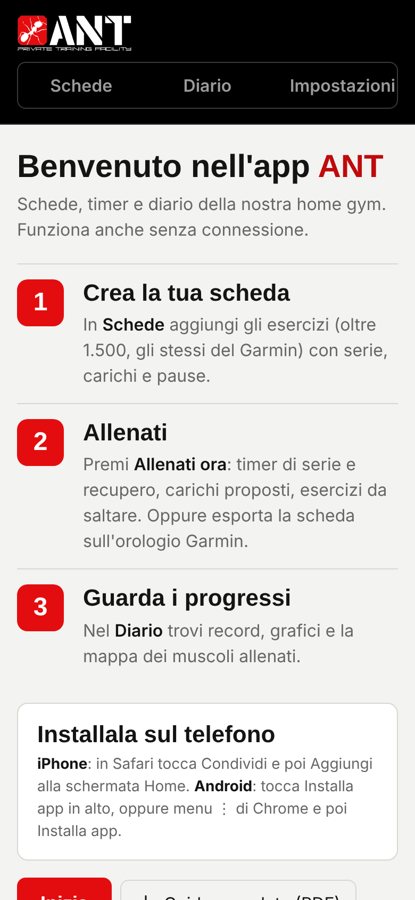
Apri il link jack-337.github.io/ant-schede con la connessione attiva, una volta sola, e installa l'app:
Da quel momento apri l'app con l'icona ANT: funziona anche in palestra senza rete. Ogni serie che segni viene salvata subito sul telefono. Se il telefono si blocca o chiudi l'app a metà allenamento, la ritrovi dove l'avevi lasciata.
Puoi cercare in italiano o in inglese: scrivendo «rematore manubri» trovi anche gli esercizi che hanno solo il nome inglese. Puoi filtrare per muscolo (Petto, Schiena, Gambe…) e per attrezzo (Bilanciere, Manubri, Cavi, Macchine…). Il filtro Le mie mostra gli esercizi che usi già.
Se l'esercizio non c'è, scrivi il nome e scegli Usa come esercizio personalizzato. Poi, nella scheda, indica quali muscoli lavora: servono per la mappa del Diario.
Tutto si salva da solo: non c'è un tasto Salva. Sopra gli esercizi vedi il riepilogo con numero di esercizi, serie, durata stimata e volume.
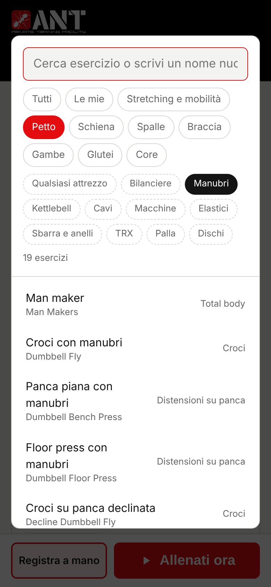
Scrivi i secondi o tocca i valori rapidi (60, 90, 120, 180). I valori proposti per i nuovi esercizi si cambiano nelle Impostazioni.
In una superserie fai due esercizi uno dopo l'altro e poi recuperi; con tre o più esercizi diventa un circuito. Sotto ogni esercizio c'è il pulsante Collega al successivo (superserie). Gli esercizi collegati hanno un bordo rosso e la scritta Superserie o Circuito.
Per sciogliere il gruppo tocca di nuovo il pulsante sotto l'esercizio (tocca per scollegare). Superserie e circuiti funzionano anche sull'orologio Garmin.
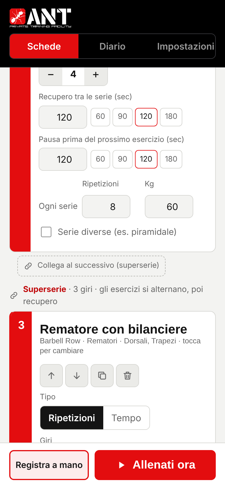
Ogni scheda ha due sezioni facoltative: Riscaldamento, prima degli esercizi, e Defaticamento, in fondo. Contengono esercizi di mobilità e stretching a tempo, con una foto animata che mostra il movimento.
Con − e + cambi il tempo a passi di 5 secondi. Per lato raddoppia il tempo: metà per il lato destro e metà per il sinistro. Il cestino toglie l'esercizio (con Annulla).
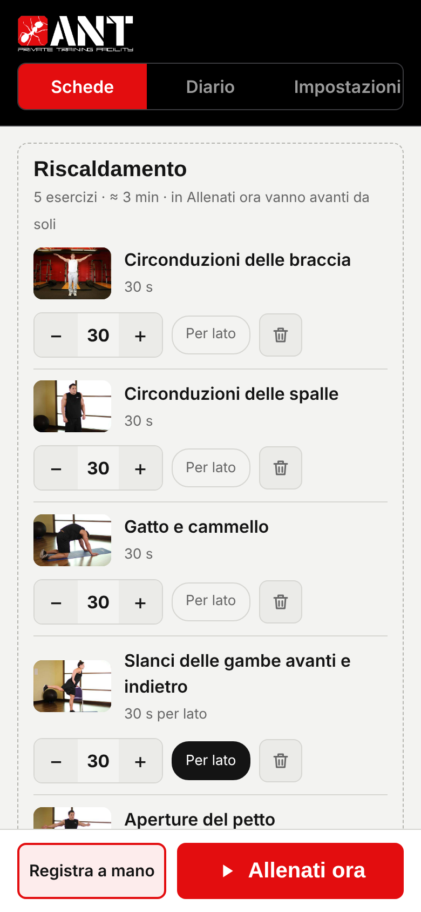
Il riscaldamento parte da solo prima della prima serie e il defaticamento dopo l'ultima, senza toccare il telefono: 5 secondi per prepararti, poi il conto alla rovescia. Negli esercizi per lato un doppio bip ti dice quando cambiare.
Puoi mettere in Pausa, Saltare un esercizio o saltare tutta la sezione. Se termini l'allenamento prima, nel riepilogo trovi il pulsante per fare comunque il defaticamento.
Riscaldamento e defaticamento passano anche sull'orologio Garmin, come fasi di riscaldamento e defaticamento dell'allenamento.
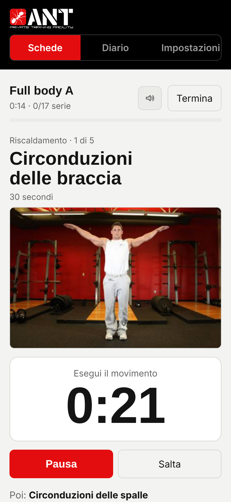
Apri la scheda e premi il pulsante rosso Allenati ora, sempre in basso. Funziona senza orologio, sul telefono o sul computer. Lo schermo resta acceso durante l'allenamento (si può cambiare nelle Impostazioni).
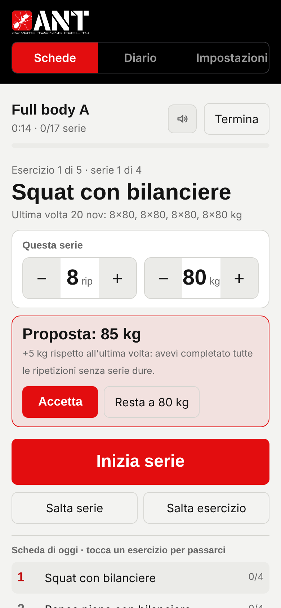
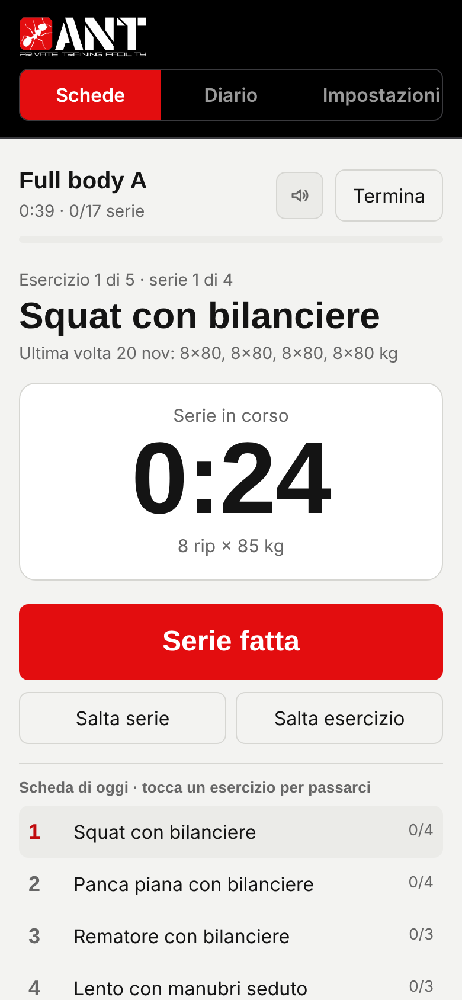
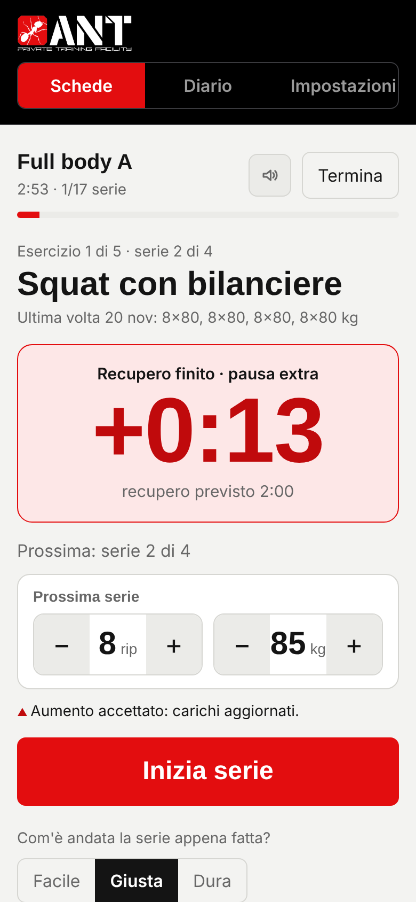
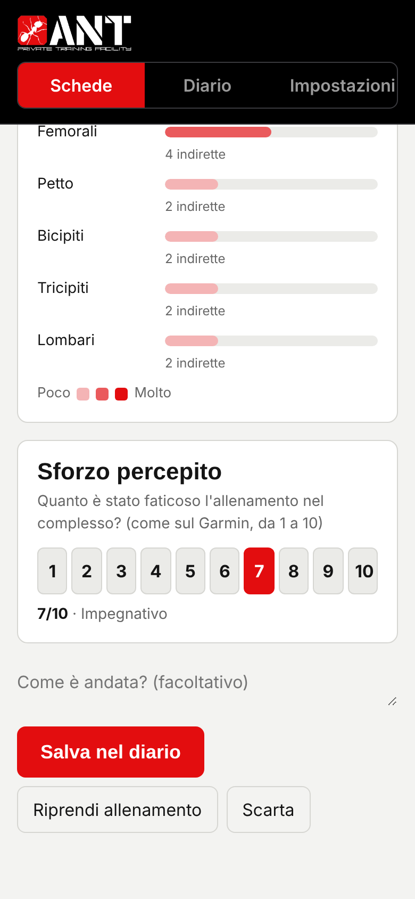
Ripetizioni e kg partono dall'ultima volta che hai fatto l'esercizio. Li cambi con − e +.
Se l'ultima volta hai completato tutte le ripetizioni senza serie dure, l'app propone di aumentare (di 2,5 kg per la parte alta e 5 kg per gambe e glutei, modificabili nelle Impostazioni). L'aumento non è automatico: tocca Accetta oppure Resta al carico di prima. La scelta vale per tutte le serie dell'esercizio.
Premi Inizia serie: il timer conta il tempo (negli esercizi a tempo fa il conto alla rovescia). A fine serie premi Serie fatta.
Parte il conto alla rovescia. Negli ultimi tre secondi senti tre bip; alla fine suona l'allarme, il telefono vibra (se lo supporta) e il bordo dello schermo lampeggia di rosso. La serie successiva non parte da sola: il timer diventa rosso e conta la pausa extra (per esempio +0:13) finché non premi Inizia serie.
Durante il recupero puoi:
Usa Salta serie o Salta esercizio: l'app ti chiede cosa fare. Recupera alla fine rimanda la serie (o le serie rimaste) a dopo le altre; Salta del tutto la toglie e non viene registrata; Annulla se l'hai premuto per sbaglio. In fondo c'è la lista della scheda: tocca un esercizio per passarci, per esempio se una macchina è occupata.
All'ultima serie, oppure con Termina, vedi il riepilogo con durata, serie, volume e muscoli allenati. Indica lo sforzo percepito da 1 a 10, come sul Garmin, aggiungi una nota e premi Salva nel diario.
Se ti sei allenato senza l'app, premi Registra a mano in basso, accanto ad Allenati ora. Trovi la scheda con i valori previsti:
L'orologio va collegato al computer, quindi questa parte si fa dal PC (apri l'app all'indirizzo jack-337.github.io/ant-schede).
Su Mac l'orologio non compare nel Finder: installa il programma gratuito OpenMTP e usa quello per copiare il file.
Ripetizioni, carichi, recuperi, superserie e circuiti passano sull'orologio; gli esercizi del catalogo vengono riconosciuti dal Garmin.
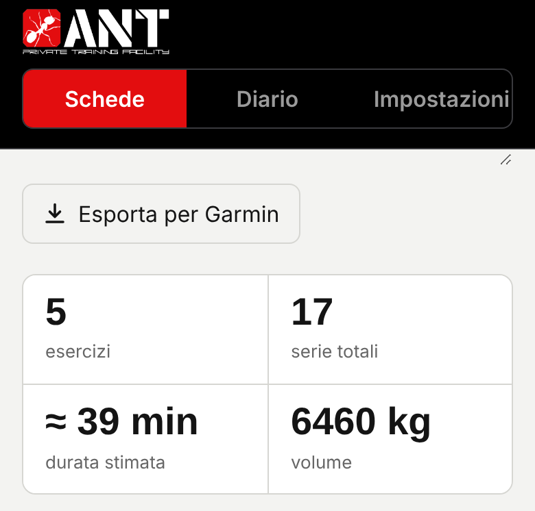
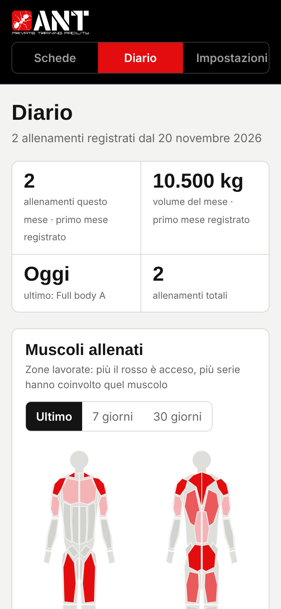
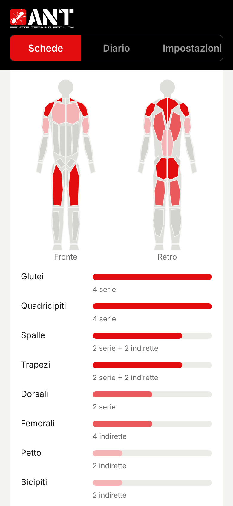
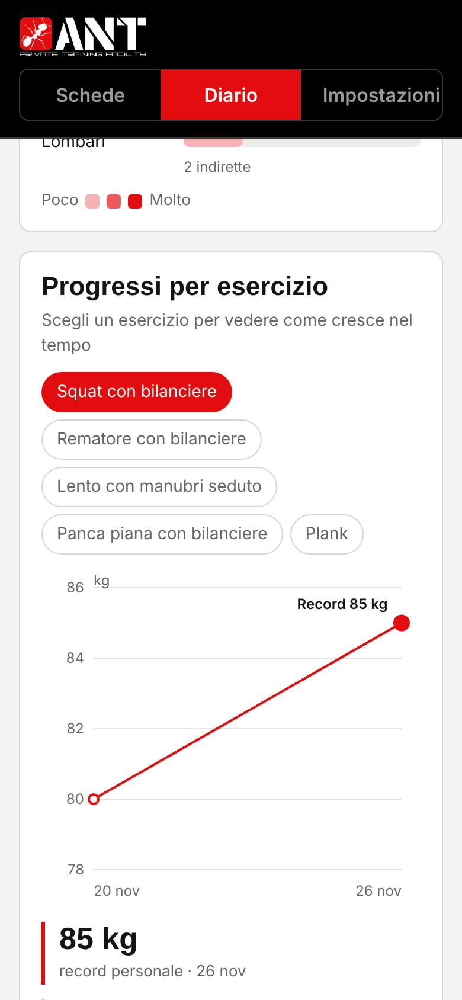
In alto premi Diario. Trovi:
Quando batti un record, al salvataggio compare il messaggio Nuovo record.
| Guida | Scarica questa guida. «Rivedi il benvenuto» mostra di nuovo la schermata iniziale. |
| Tema | Scuro, Chiaro o Automatico (segue il tema del telefono). |
| Volume degli allarmi | In proporzione al volume del telefono. Il pulsante Prova fa suonare l'allarme. |
| Vibrazione | A fine recupero, sui telefoni che la supportano (non su iPhone). |
| Bip 3-2-1 | Tre bip brevi negli ultimi secondi del recupero. |
| Schermo sempre acceso | Durante l'allenamento lo schermo non si spegne. |
| Recupero e pausa predefiniti | I valori proposti quando aggiungi un esercizio. |
| Aumento proposto | Di quanto salire quando l'app propone un carico maggiore: parte alta (1,25 / 2,5 / 5 kg) e gambe e glutei (2,5 / 5 / 10 kg). |
| Dati | Backup, Importa backup e Cancella tutti i dati (va toccato due volte; subito dopo puoi ancora annullare). |
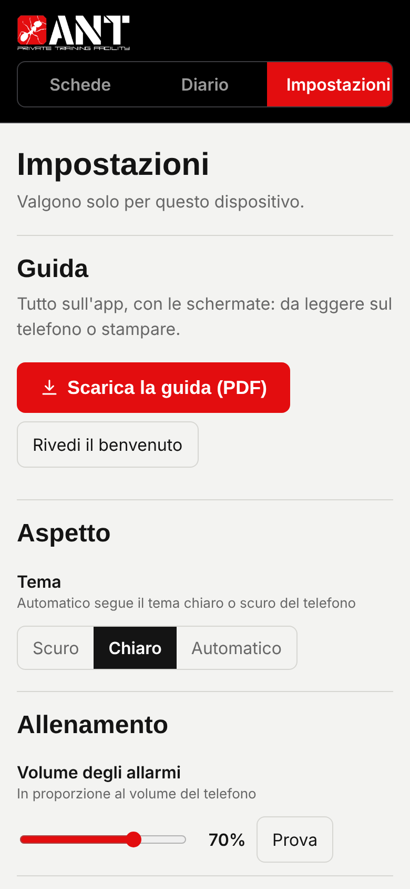
I dati restano solo sul dispositivo dove li inserisci. Telefono e computer hanno dati separati.
ANT Schede · guida per la versione 1.2.0